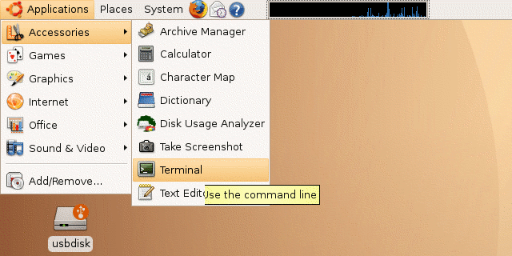
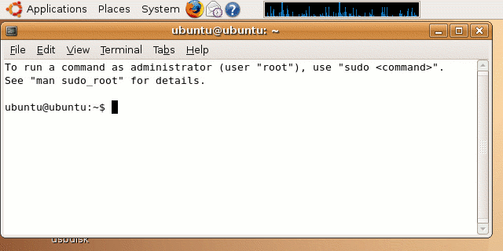
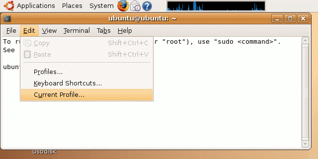
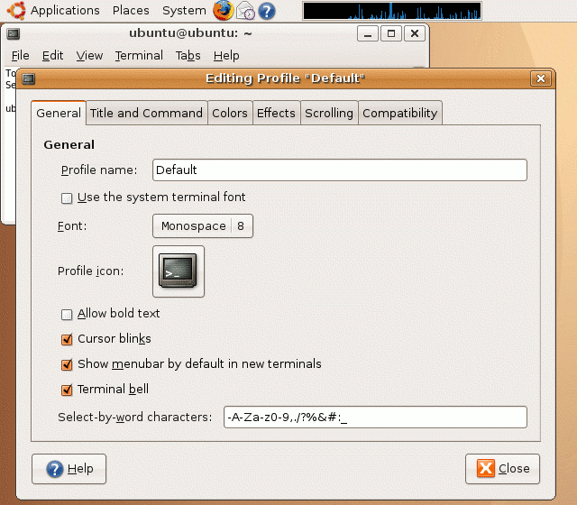
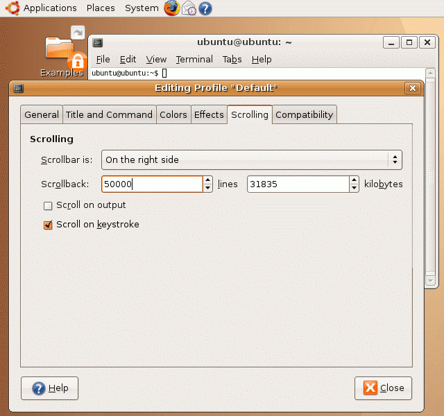
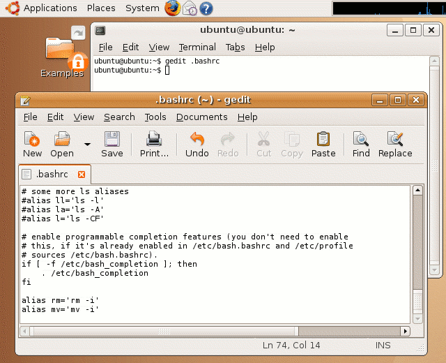

| vlsitechnology.org /Live CD help /terminal application | |
Terminal application | |
Linux help
Windows help
Linux Live CD
The terminal is the window where one types Linux commands A terminal window can be opened from the
Applications -> Accessories |
menu.

The terminal opens with an unnecessarily large font, reminiscent of the early IBM DOS based PC's. This large font makes it difficult to deal with programs generating large amounts of data, which is a typical engineering experience.

The characteristics of the terminal window can be changed by modifying its profile.

Deselect the
Use the system terminal font |
and set the font size to 8. I also recommend deselecting the
Allow bold text |
option as this bold text is hard to read.

Terminal history is maintained, but by default it is quite short
at 500 lines. This can mean important information has scrolled off
the top of the screen. A bigger scrollback can be set up by
selecting the Scrolling tab
and set the Scrollback to 50000.
Close the dialog when finished.

For more serious work, I also recommend modifying the default behaviour of the Linux remove and move commands. By default, remove deletes the requested file and it is gone for good. We're not talking about moving the file to the trashcan here. If you made a mistake, it's terminal (geddit).
The operation can be changed so that removing a file is interactive, with a prompt asking confirmation for the delete. You can still remove a file without and interactive prompt by using remove with the force option. Also, remove used inside a script is still the default on.
Similarly for the move command, if a file is moved to a destination which already exists, the destination file will be deleted without warning and replaced with the new file. By making it interactive, you can confirm the deletion.
The changed behaviour has to be written into the file .bashrc in the home directory, which is /home/ubuntu. An alias is set up which maps rm (remove) to rm -i and mv to mv -i.
This change will apply to any new terminals.
Note too that the same consideration can apply to the copy command. This too can be made by default interactive (cp to cp -i).
